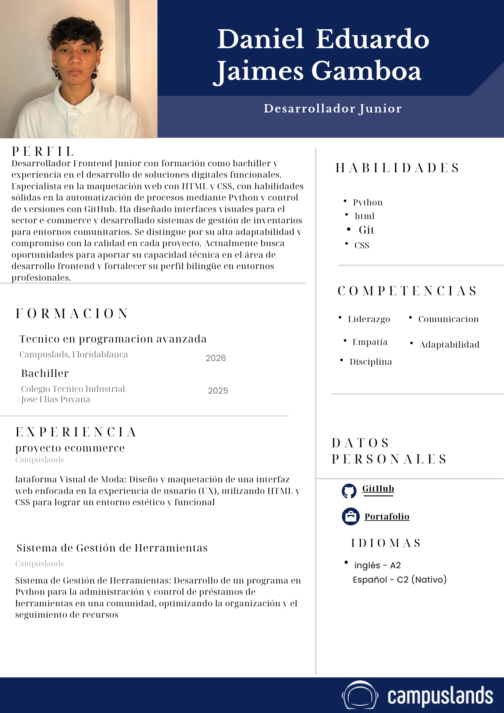
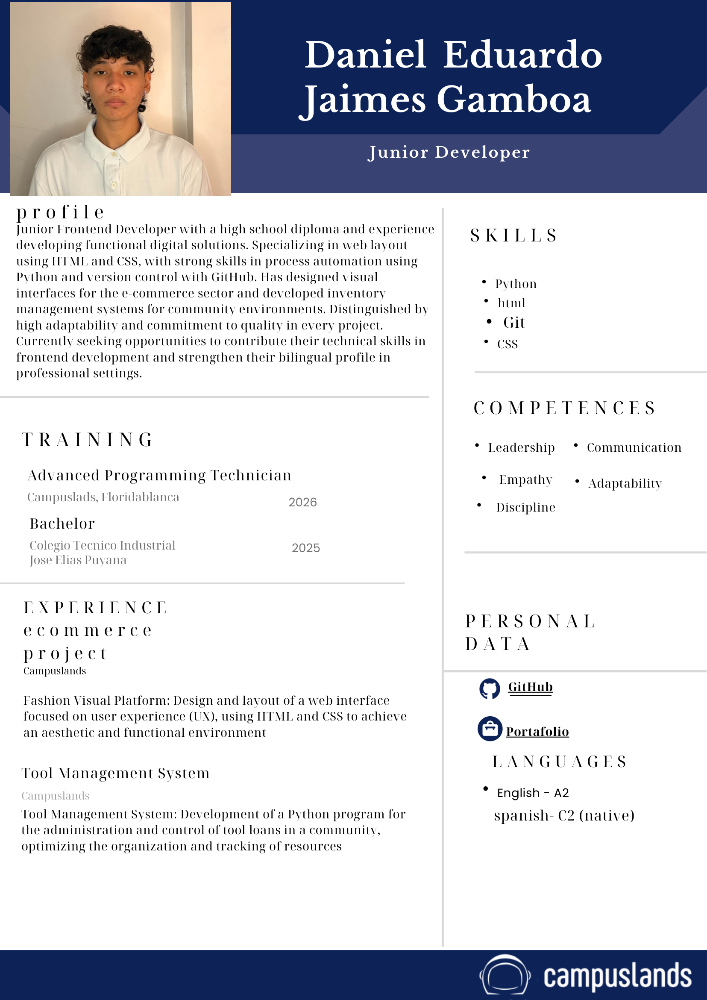

Frontend
HTML & CSS
88%
JavaScript
60%
Diseño Responsive
70%
Estudiante de desarrollo web con pasión por construir interfaces limpias y funcionales. De Bucaramanga para el mundo 🇨🇴 — siempre aprendiendo, siempre creando.
// sobre_mi.md
Soy estudiante de desarrollo de software con menos de un año en el mundo del código, pero con una curva de aprendizaje que no para. Me estoy definiendo hacia el Frontend, aunque no le huyo ni al backend ni a los datos.
He trabajado en proyectos que van desde sistemas de transporte con IA hasta bots de delivery automatizados con n8n. Cada proyecto me enseña algo nuevo y me convence más de que esto es lo mío.
Soy de Bucaramanga, Colombia, busco mi primera práctica y estoy listo para aportar, aprender y crecer junto a un equipo que construya cosas que importen.
// stack.json
Mis herramientas actuales. Nivel honesto, sin inflar números.
// projects.list
Proyectos reales del proceso de aprendizaje. Cada uno representa un reto nuevo.
Sistema inteligente de monitoreo y geolocalización en tiempo real para el transporte público de Bucaramanga. Desarrollado para la Hackathon Metrolínea: seguimiento de buses, cálculo de ETA y detección de incidentes con visión artificial (YOLOv8).
Bot de delivery automatizado construido con n8n. Gestiona pedidos, notificaciones y flujos de trabajo sin necesidad de código tradicional.
Sistema de préstamo y gestión de herramientas para una comunidad vecinal. Manejo de usuarios, inventario, logs y reportes de usuarios activos.
// contacto.sh
Estoy buscando mi primera práctica y listo para aportar desde el día uno. Si tienes un proyecto, un equipo o simplemente quieres conectar — escríbeme.
danieljgamboa55@gmail.comSelecciona tu idioma preferido / Select your preferred language

🇪🇸 EspañolDesarrollador Junior — Perfil técnico, formación y proyectos en español.

🇺🇸 EnglishJunior Developer — Full technical profile, training & projects in English.